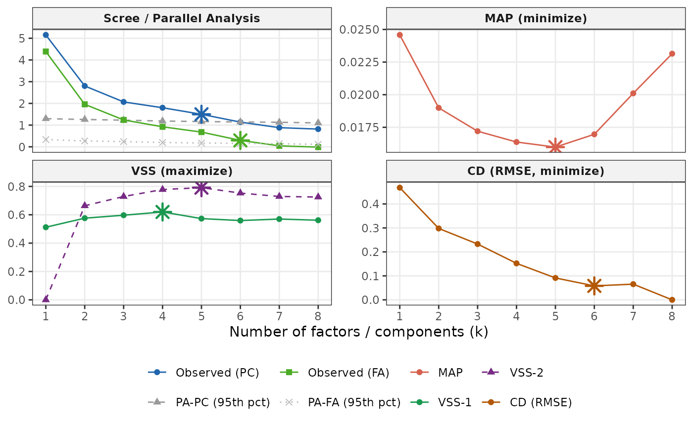

Renders a ggplot2 diagnostic for a suggest_k object. When
EFAtools is installed and CD was computed, the plot is a 2x2 grid:
Scree/PA (top-left), MAP (top-right), VSS (bottom-left), and CD RMSE
(bottom-right). When CD is unavailable, the plot is a single-column
three-panel layout (Scree/PA, MAP, VSS). The recommended k for each
criterion is marked with a star-shaped point.
Usage
# S3 method for class 'suggest_k'
autoplot(object, ...)Details
The scree panel shows both PC and FA observed eigenvalues alongside their respective random-data thresholds. PA-PC compares the blue "Observed (PC)" line to the dashed PA-PC threshold; PA-FA compares the teal "Observed (FA)" line to the dotted PA-FA threshold. Reading the lines on the same panel is informative but the two comparisons are independent.
The CD panel plots the mean RMSE between observed and comparison-data eigenvalues at each k; the retention threshold (star) is where this curve first crosses below the comparison-data average.
Requires the ggplot2 package.
Examples
# \donttest{
if (requireNamespace("ggplot2", quietly = TRUE)) {
sk <- suggest_k(bfi25, n_iter = 5)
autoplot(sk)
}
#> ℹ Running parallel analysis (5 iterations, PC + FA)...
#> ✔ Running parallel analysis (5 iterations, PC + FA)... [95ms]
#>
#> ℹ Running MAP and VSS...
#> CD: 125 rows with missing values removed (875 complete cases used).
#> ✔ Running MAP and VSS... [121ms]
#>
#> ℹ Running Comparison Data (CD)...
#> ✔ Running Comparison Data (CD)... [13.9s]
#>

# }